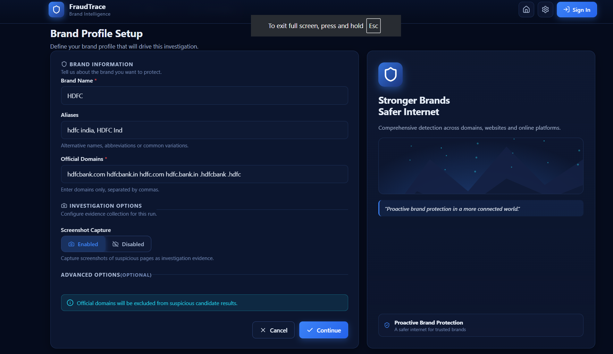
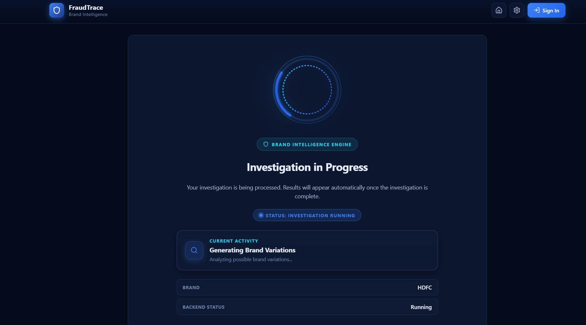
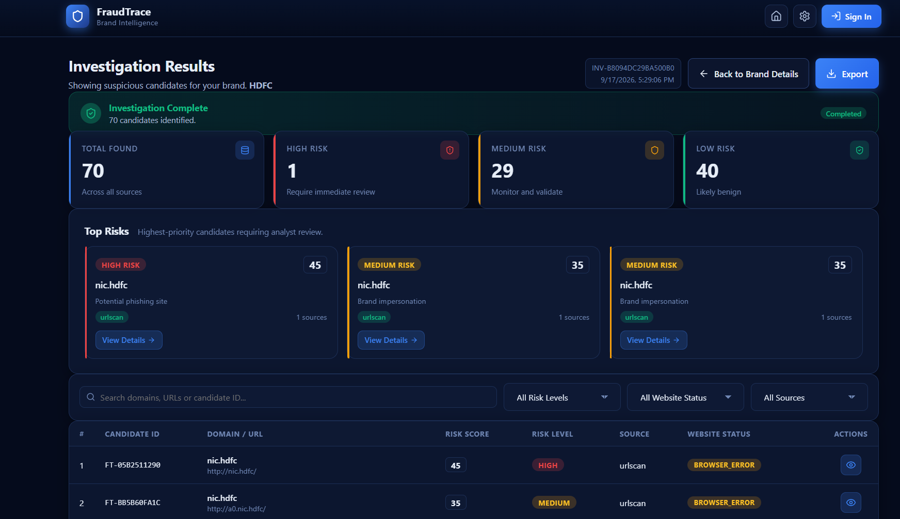
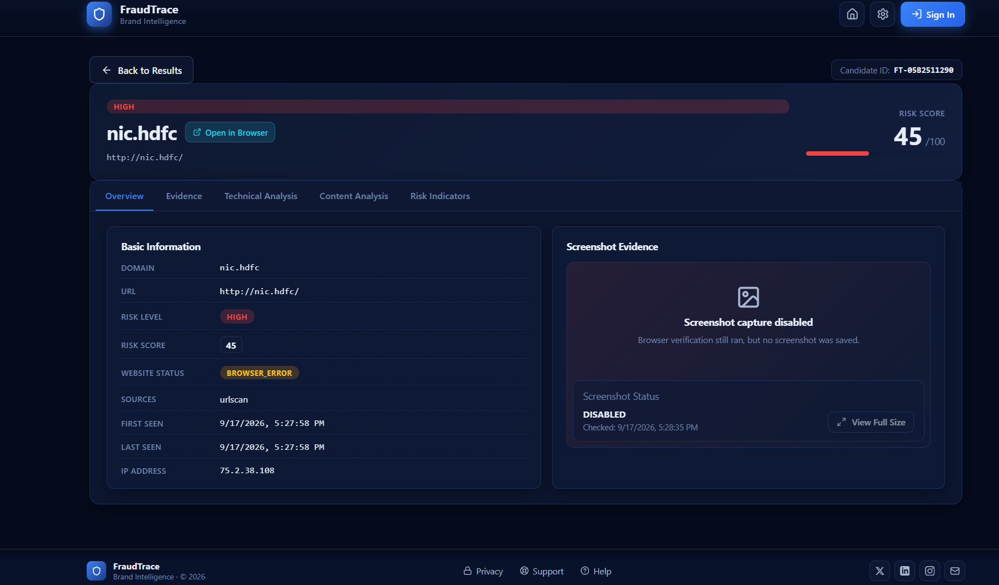
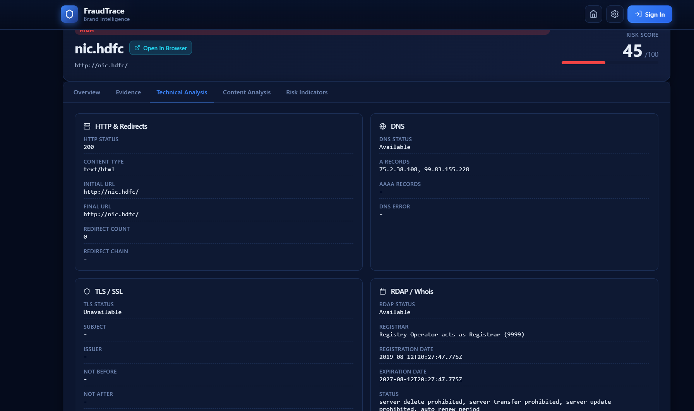
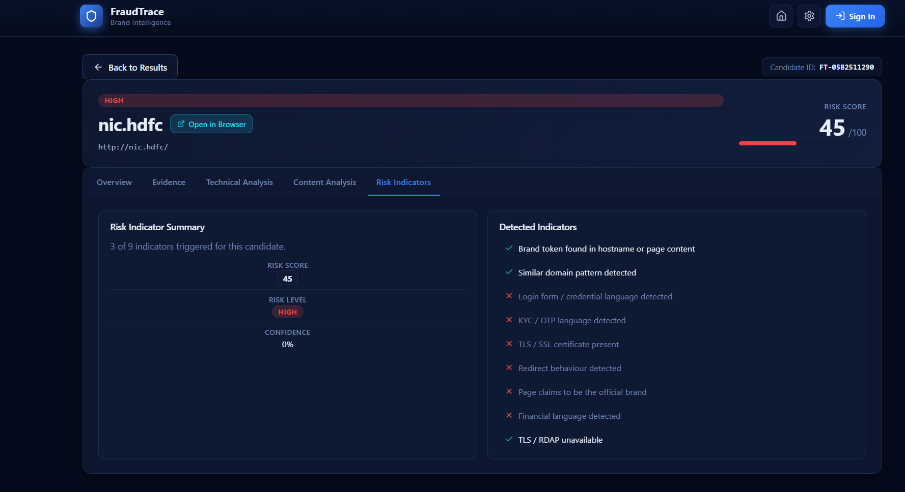

FraudTrace — Brand Intelligence
FraudTrace: Brand Intelligence for potential online impersonation. A local-first defensive investigation workflow for discovering and prioritising potential brand-related domains and URLs for human review.
Scope note: FraudTrace identifies and prioritises discovery signals. A risk score, candidate label, or page observation is not proof of fraud, ownership, maliciousness, or legal infringement. Human and, where appropriate, legal review remain necessary.
Overview
FraudTrace is a defensive investigation tool for finding and reviewing potential brand-related domains and URLs. A user supplies a brand name, aliases, and official domains; the system generates controlled lookalike variations, queries available public sources, removes known-good domains, gathers technical and page-level observations, and presents prioritised candidates in a review-oriented dashboard.
Problem & Objective
Brands can be imitated through typo domains, character substitutions, misleading login pages, and other web-based signals. Reviewing every possible variation manually is slow and makes it difficult to distinguish a relevant lead from a benign domain.
The objective was to build a repeatable local workflow that can:
- Accept a brand profile, including aliases and official domains.
- Discover potentially relevant domains and URLs from public sources.
- Exclude official and allowlisted properties before prioritisation.
- Preserve evidence and source provenance for a human reviewer.
- Rank candidates using explainable observations instead of presenting a legal verdict.
- Provide a usable interface for running an investigation, monitoring it, filtering results, and opening a detailed candidate record.
Implemented Features
- Brand-profile setup: Users enter a brand name, aliases, official domains, and whether browser screenshots should be captured.
- Lookalike generation: The Python pipeline produces controlled mutation patterns, including substitutions, omissions, duplications, transpositions, keyboard-adjacent variants, contextual combinations, and vetted homoglyph/confusable variants.
- Public-source discovery: The pipeline supports Certificate Transparency (
crt.sh), URLScan, and optional search-provider discovery. Source failures are designed not to stop the remaining sources. - Candidate merge and filtering: Duplicate hosts are consolidated while retaining all contributing sources. Official domains and allowlisted entries are excluded from suspicious-candidate scoring.
- Technical and content observations: Candidates can be enriched with RDAP, DNS, TLS, HTTP/redirect, public-page, and content-intelligence observations.
- Browser verification and visual evidence: Selenium with isolated headless Chromium checks a candidate directly, inspects rendered content, and can capture a screenshot only for meaningful active pages. It does not submit forms, use credentials, enable downloads, or use a personal browser profile.
- Explainable priority scoring: Risk levels and reasons reflect observable domain, placement, context, and content signals. High/critical classification requires a domain signal plus contextual/content signal; path-only matches remain low priority.
- Investigation dashboard: The React interface shows live investigation state, summary counts, top-risk candidates, search, filters, sorting, and candidate-detail views.
- Candidate-detail workspace: A tabbed record exposes overview, evidence, technical analysis, content analysis, and risk indicators. Candidate screenshots can be opened full size when available.
- Exports and review workflow: The pipeline writes CSV, JSON, and a human-readable report. Supporting commands create/apply an analyst-review CSV and generate evaluation metrics from human labels.
- AI-assisted investigation (optional): A bounded evidence packet can be summarised by a deterministic offline assistant or an optional local Ollama-compatible model. This output does not alter source evidence, scores, or legal conclusions.
Architecture & Workflow
React + Vite interface
│ start investigation, poll status, display results
▼
Local FastAPI API
│ background investigation worker; REST endpoints
▼
Python investigation pipeline
│
├─ Brand profile → mutation / homoglyph generation
├─ Public discovery → CT logs / URLScan / optional search
├─ Merge + deduplicate → exclude official / allowlisted domains
├─ Parse + pre-score → targeted enrichment and page analysis
├─ RDAP / DNS / TLS / HTTP / redirect observations
├─ Isolated browser verification + conditional screenshots
├─ Explainable scoring + evidence assembly
└─ CSV / JSON / text report → API → dashboardThe API keeps local, in-memory investigation jobs and runs the existing Python pipeline in a background thread. The interface polls for status and retrieves the backend-produced result set; it does not invent fallback candidates when the backend is unavailable. This is a local-development design, not a production deployment architecture.
Technology Stack
| Area | Implementation Present in the Project |
|---|---|
| Front end | React 18, React Router, Vite, Lucide icons, CSS |
| API | FastAPI, Pydantic, Uvicorn |
| Core pipeline | Python 3.11+, requests, Beautiful Soup, lxml, tldextract, idna |
| Discovery | Certificate Transparency / crt.sh, URLScan API, optional search provider |
| Enrichment | DNS, RDAP, TLS, HTTP and redirect observations |
| Browser evidence | Selenium and headless Chromium |
| Outputs / quality | CSV, JSON, text reports, pytest, human-review CSV, scoring evaluation |
Product Walkthrough & Screenshots
The following visual walkthrough illustrates the investigation workflow. The displayed HDFC example demonstrates an example review session, rather than a verified real-world finding.







Challenges & Design Considerations
Avoiding false certainty
The strongest design constraint is preventing a technical score from being mistaken for a legal conclusion. FraudTrace uses discovery-signal language, keeps reasons and evidence visible, applies conservative dual-signal rules for the highest priority categories, and maintains human review as the final step.
Reducing noisy results
Brand terms can appear in legitimate places. The pipeline separates registered domains from URL paths, excludes official and allowlisted domains, consolidates duplicate discoveries, and treats path-only matches as low priority.
Making external data collection resilient
Public sources can time out or fail. Discovery sources run independently; Certificate Transparency access uses a small configurable request budget, timeout, retry, and backoff strategy. An unavailable source is recorded as unavailable rather than interpreted as an empty search result.
Capturing browser evidence safely
The browser verifier uses an isolated, headless session and observes pages without logging in, submitting forms, clicking arbitrary elements, or downloading files. It identifies error/interstitial states so provider or browser error pages are not treated as candidate-site evidence.
Current Status & Honest Limitations
Implemented in the supplied source: A local React/FastAPI integration, a Python discovery-and-analysis pipeline, browser verification, conditional screenshot capture, exports, test files, human-review tooling, scoring evaluation tooling, and optional local AI-assisted summaries.
Not presented as complete or production-ready:
- The API describes itself as a local FastAPI wrapper and explicitly says it is not for production use.
- Investigation state is stored in memory, so it is lost when the API process restarts; there is no database layer in this version.
- External-source coverage depends on availability and optional API keys. A source being unavailable is not treated as evidence that no matching candidate exists.
- Screenshots are conditional: browser error pages, certificate/privacy interstitials, blocked pages, empty pages, and disabled capture do not produce evidence screenshots.
- The repository package is marked private and the supplied ZIP contains no Git remote or GitHub URL. Add the real repository link before publishing the portfolio page.
- No validated accuracy, detection-rate, time-saving, user-adoption, or business-impact metrics were found in the supplied files. Numerical outcome claims are intentionally omitted.
Explore the Source Code
Review the architecture, enrichment pipeline, browser verification engine, and explainable scoring implementation on GitHub.
View Repository on GitHub